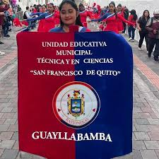
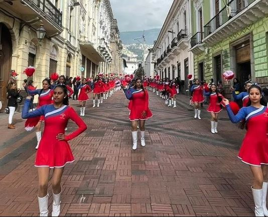
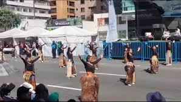

El "Club de Bastoneras UEMSFQ" es un grupo dinámico de jóvenes apasionadas por el arte de las bastoneras. Destacan en eventos locales y competiciones regionales, fusionando gracia, destreza y energía en sus actuaciones. Además de perfeccionar habilidades técnicas, el club enfatiza valores como disciplina y liderazgo. Las bastoneras participan activamente en proyectos comunitarios, llevando su arte más allá del escenario. Fomentan la diversidad de estilos y promueven la camaradería entre los miembros. A través de trajes llamativos y coreografías innovadoras, el club deja una huella inspiradora en la comunidad, demostrando que la pasión por las artes y el compromiso comunitario pueden converger de manera excepcional.
  